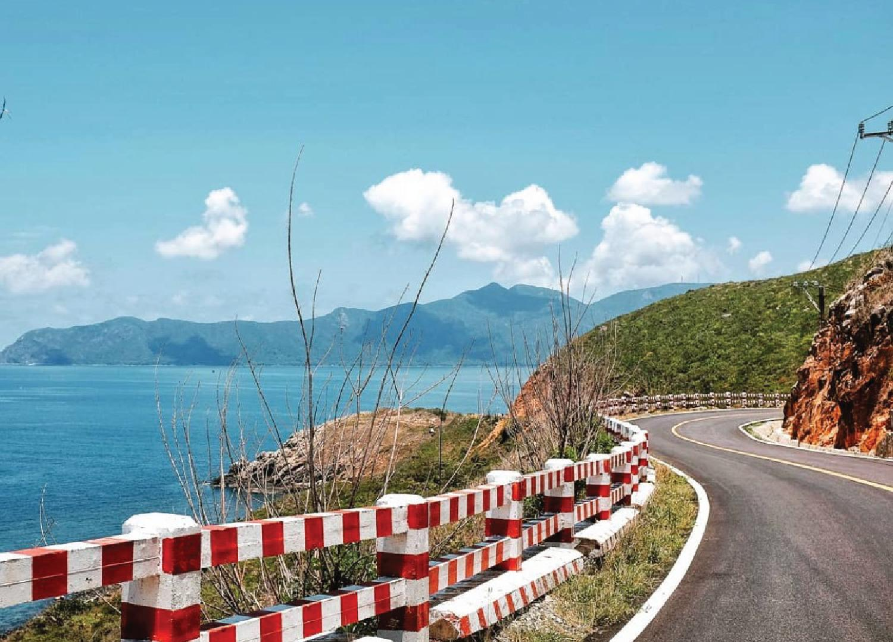
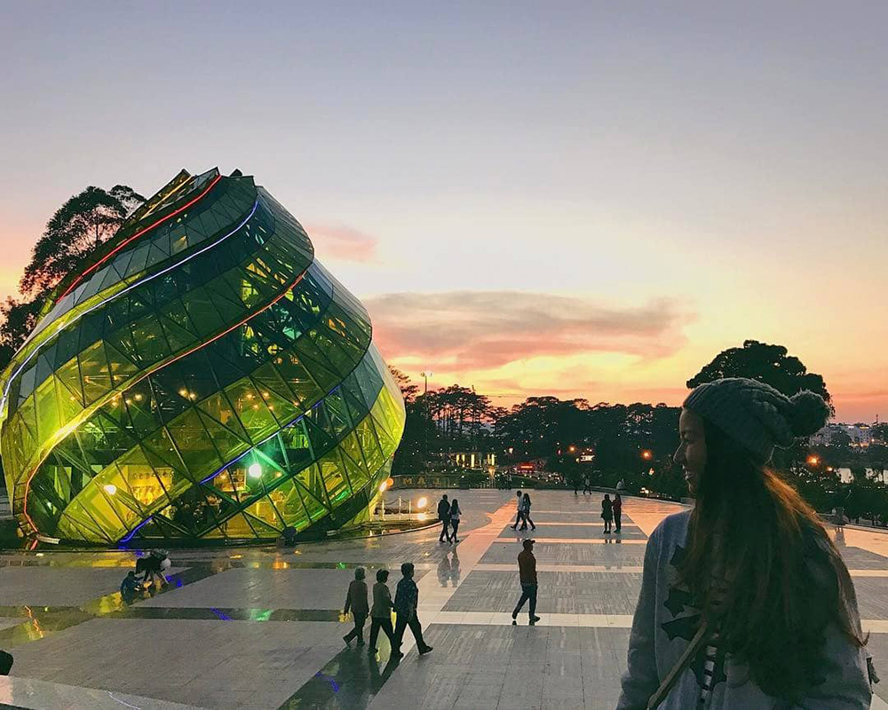
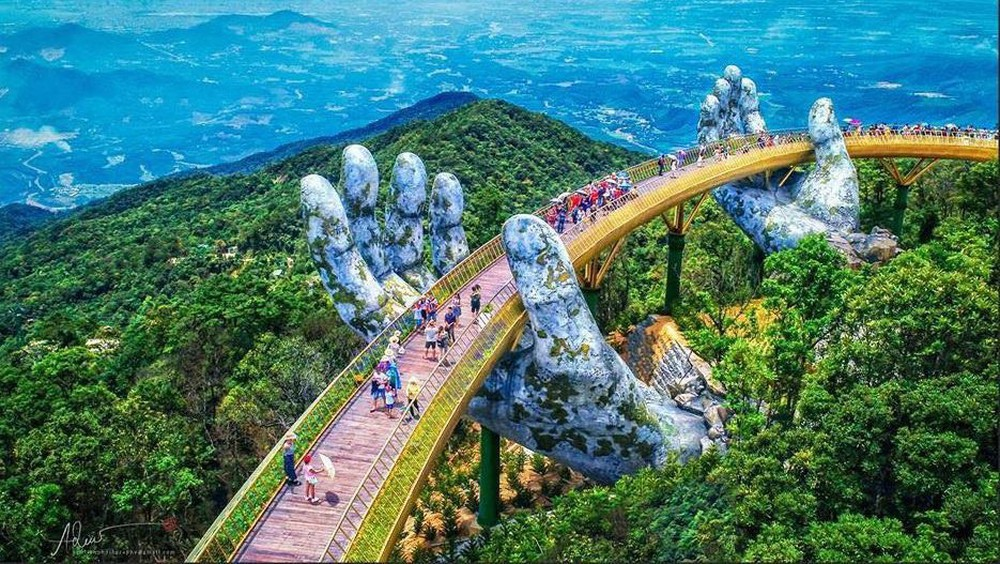
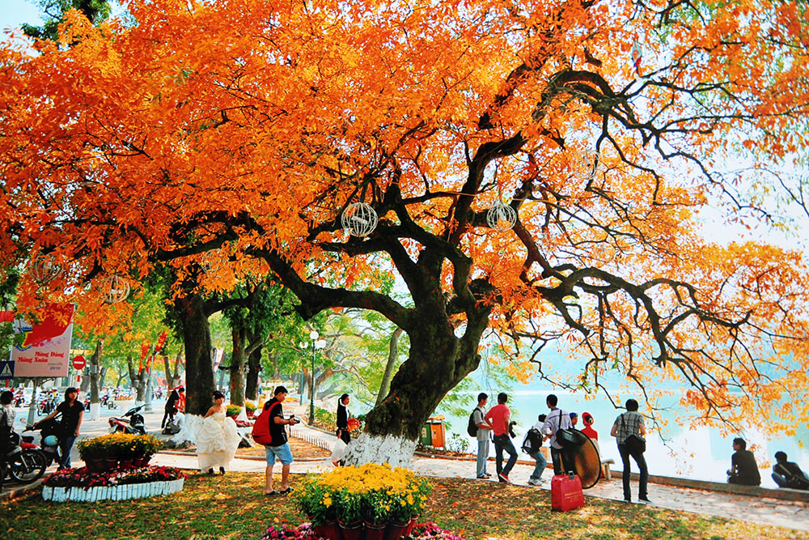

Thêm mới bài viết
Danh sách tin tức
| STT | Mã tin | Tiêu đề | loại tin | Người đăng | Nội dung | Ngày đăng | Hình ảnh | Thao tác | Thao tác |
|---|---|---|---|---|---|---|---|---|---|
| 1 | 12 |
Du lịch Tây Bắc tháng 11 nên đi đâu và trải nghiệm gì? |
Cẩm nang du lịch | Trần Hoàng Khôi |
Bến Tre nổi tiếng là “xứ dừa” trong huyền thoại, nay cũng là điểm du lịch được nhiều du khách chốn thị thành tìm về mỗi dịp cuối tuần. Tại đây có nhiều khu vui chơi, du lịch sinh thái mà bạn có thể khám phá cả ngày không chán, điển hình là khu du lịch Lan Vương, Cồn Phụng, Làng Bè. |
21/11/2021 |  | Sửa | Xóa |
| 2 | 12 |
Du lịch miền Tây mùa nước nổi săn các sản vật đồng quê |
Cẩm nang du lịch | Trần Hoàng Khôi |
Khi cái gay gắt của nắng hạ không còn thiêu đốt cũng là lúc miền Tây bước vào mùa nước nổi mang theo những sản vật có một không hai. Những cung đường ruộng nước như được khoác lên lớp áo mới màu bàng bạc, lóng lánh và cứ thế những tour du lịch miền Tây mùa nước nổi lại trở nên "hot" hơn bao giờ hết. |
21/11/2021 |  | Sửa | Xóa |
| 3 | 12 |
Kinh nghiệm du lịch Đà Lạt mùa hoa dã quỳ khoe sắc |
Cẩm nang du lịch | Trần Hoàng Khôi |
Khi những cơn mưa “lặng lẽ” rời đi, trả lại nắng vàng cho Đà Lạt cũng là lúc thành phố mù sương khoác lên mình chiếc áo rực rỡ của những màu hoa, nổi bật là sắc vàng mùa hoa dã quỳ. Du lịch Đà Lạt mùa này rất tuyệt, bạn không chỉ được ngắm hoa mà còn được săn mây, chill cùng núi rừng Tây Nguyên gió lộng… |
21/11/2021 |  | Sửa | Xóa |
| 4 | 18 |
Bánh tôm, món đặc sản Hà Nội được CNN ca ngợi hết lời |
Cẩm nang du lịch | Trần Hoàng Khôi |
Một trong những nét đẹp của du lịch Hà Nội khiến bao người mê mẩn là nền ẩm thực. Trong đó, món bánh tôm Hồ Tây là món ăn không nên bỏ qua khi đến Hà Nội, món ăn này cũng từng được CNN hết lời khen ngợi trong chương trình “Destination”. |
21/11/2021 |  | Sửa | Xóa |
| 5 | 19 |
Khám phá gì ở Đức sau khi du lịch nước ngoài mở cửa? |
Cẩm nang du lịch | Trần Hoàng Khôi |
Đức nổi tiếng là một trong các quốc gia ở Châu Âu có nhiều tòa lâu đài cổ, công trình lịch sử tuyệt đẹp và phong cảnh nên thơ. Khi du lịch Đức bạn nhất định đừng quên khám phá 5 địa điểm này nha. |
21/11/2021 | Sửa | Xóa |